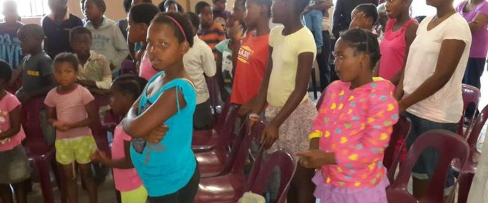
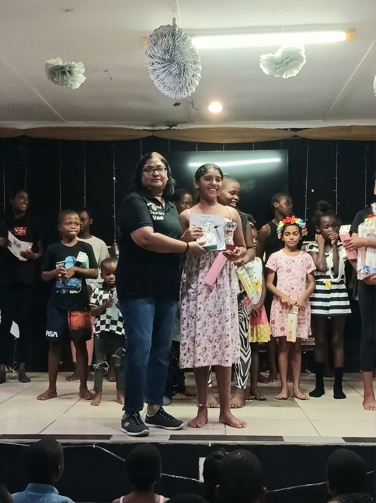
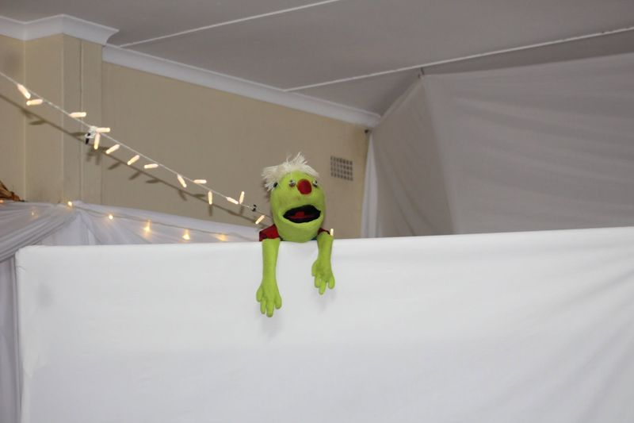

Kidz Club
Every Sunday morning from 8 to 10, children from Etete, Groutville and around KwaDukuza come together for praise, a Bible story, games, friends and a lot of encouragement.
Sundays
8 to 10am
At Breakthrough Centre, 170 Old Main Road, Etete. All children in our community are welcome, rain or shine.
This is where Breakthrough Centre began on 10 October 1990: a children's club that gave young people somewhere good to be. Thirty-six years later, Sunday mornings are still the heartbeat of the centre, and some of the children who came as toddlers now come back to encourage the next group to stay in school and finish strong.

What happens on a Sunday
No two Sundays are the same, but every one is built around faith, fun and life lessons children can carry home.
Praise and worship
The highlight of the morning. The children lead the songs, learn new ones in just a couple of sessions, and fill the hall with noise.
Stories and reading
A Bible story every week (Daniel in the lions' den, young Joseph and his coat, the prodigal son, Samson, Hannah and more), plus time with books and worksheets to build reading skills.
Life lessons
Friendship, gratitude, respect, a servant's heart, what Freedom Day and Youth Day mean, and how to stay safe. We've talked about bullying, gender-based violence and child protection too.
Games and play
Soccer and netball outside, indigenous games, puzzles, toys and bikes, movie mornings, a robotics session, and the odd waffle day.
Special days
Easter, Mother's Day, Father's Day, Mandela Day, Women's Day, Heritage Day and birthdays all get celebrated, and Christmas brings a meal, party packs and a gift for every child.
Visitors
Guests share with the children: an officer from Umhlali SAPS on substance and child abuse, Metro World Child South Africa on bullying, local churches who serve a meal, the Spin Da Flava team, and former Kidz Club members.

My City, My Future
At our "My City, My Future" contest, Kidz Club children shared their hopes and dreams for their community. The winner took home a R500 education voucher, the runners-up won hampers, five children received book prizes for their effort, and every child who took part got a pencil case.
Hearing a new generation speak about their future gives us real hope for South Africa.
Kidz Club in pictures
Thirty-six years of Sunday mornings: a garden, games, gifts, Heritage Day, Larry and a lot of happy faces. Tap a photo to see it bigger.
Meet Larry!
Larry the puppet is Kidz Club's favourite character, so much so that we call him Laugh Out Larry. He pops in to help teach scripture with plenty of laughter. When Covid-19 closed our doors for a while, Larry kept children learning with daily programmes on Ballito TV. Search for the Laugh Out Larry Show on YouTube to watch the episodes.

Come and join us
Questions about Kidz Club? Call or WhatsApp 081 775 1488.